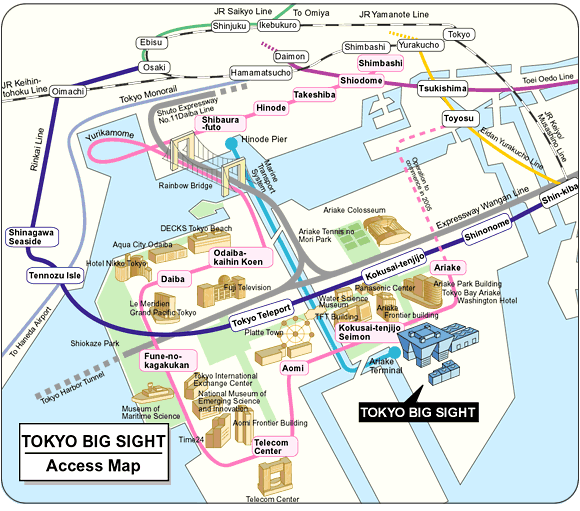

Tokyo Big Site
Інформація про Tokyo Big Site скопійована зі сторінки Tokyo Jazz 2004| RINKAI LINE | 7-min.walk from Kokusai-tenjijo Sta. Shinjuku(JR)<12min.>Osaki(JR)<13min.> Kokusai-tenjijo *direct service from Osaki from Omiya on the JR Saikyo Line. Shin-kiba(JR, Subway)<5min.> Kokusai-tenjijo |
| YURIKAMOME Line | 3-min.walk from Kokusai-tenjijo Seimon Sta.-- Shinbashi(JR, Subways)<22min.>Kokusai-tenjijo Seimon |
| MARINE TRANSPORT SYSTEM | Right next to AriakeTerminal? Hinode Pier(7-min. walk from JR Hamamatsucho Sta.) <20min.>AriakeTerminal? |
| CITY BUS | Tokyo Sta. Yaesu Exit(JR) <about 35min.>Tokyo Big Sight Tokyo Teleport(Rinkai Line) <about 5min.>Tokyo Big Sight Monzennakacho(Subway) <about 30min.>Tokyo Big Sight Hamamatsucho(JR) <about 30min.>Tokyo Big Sight |
| AIRPORT BUS | (Limousine Bus, Keihin Kyuko Bus) About 30min. From Haneda Airport Tokyo Big Sight About 65min. From Narita Airport Tokyo Big Sight About 20min. From Tokyo City Air Terminal Tokyo Big Sight *Please note that some buses may only be available during times of events being held. |
| CAR | About 20 min. From Tokyo Station About 15 min. From Haneda Airport About 50 min. From Narita Airport |

Створений : dmytro.
останні зміни: Четвер 29 з July, 2004 10:06:13 JST dmytro.
Оригінал документу знаходиться на http://tiki/kraiany/tiki/tiki-index.php?page=Tokyo%20Big%20Site